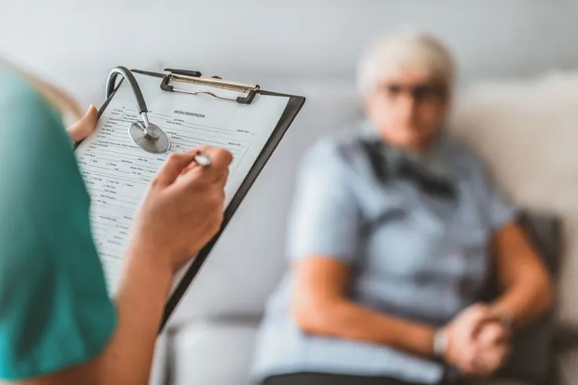

Consultation chez votre ostéopathe au Grand-Quevilly
Déroulement, durée, tarifs et remboursement : tout ce qu'il faut savoir avant votre première séance d'ostéopathie au cabinet du Grand-Quevilly.
Déroulement d'une séance d'ostéopathie
Chaque consultation chez votre ostéopathe au Grand-Quevilly suit un protocole rigoureux en quatre étapes, conçu pour identifier précisément l'origine de vos douleurs et y apporter une réponse adaptée.
L'anamnèse : comprendre votre motif de consultation
La séance débute par un entretien approfondi. Votre ostéopathe vous interroge sur le motif de votre venue, votre historique médical, vos antécédents chirurgicaux, vos traitements en cours et votre mode de vie. Cette étape est essentielle pour orienter l'examen clinique et exclure d'éventuelles contre-indications à la manipulation.
Si vous consultez pour la première fois, prévoyez de détailler votre parcours de santé. Plus les informations sont précises, plus la prise en charge est efficace.
Les tests et le diagnostic ostéopathique
Après l'entretien, Thomas Lefebvre procède à un examen palpatoire et à des tests de mobilité articulaire, musculaire et tissulaire. Debout puis allongé sur la table, vous êtes guidé à travers une série de mouvements qui permettent de cartographier les zones de restriction. L'objectif est d'identifier les structures en souffrance — articulations, muscles, fascias, viscères — et leur relation avec votre symptomatologie.

Le traitement
Le traitement mobilise des techniques manuelles choisies en fonction du diagnostic. Selon votre profil et votre sensibilité, votre ostéopathe peut utiliser des mobilisations articulaires, des techniques myofasciales, des manipulations structurelles (avec ou sans craquement), des techniques crâniennes ou viscérales. L'intensité est toujours adaptée : aucune manœuvre n'est réalisée sans votre consentement.
Les conseils post-séance
En fin de séance, des recommandations personnalisées vous sont transmises : exercices d'étirement, conseils posturaux pour le travail ou le sport, hydratation, ajustements ergonomiques. Ces conseils prolongent l'effet du traitement et favorisent une récupération optimale entre les séances.
Tarifs de votre ostéopathe au Grand-Quevilly
Consultation classique (adulte)
60 €
Durée : 45-60 min (première consultation) / 30-45 min (suivi)
Consultation nourrisson / enfant
55 €
Durée : 30-45 min — techniques douces adaptées
Consultation à domicile
70 €
Supplément déplacement inclus — Le Grand-Quevilly et communes limitrophes
Le règlement s'effectue par carte bancaire, espèces ou chèque. Une facture est remise systématiquement après chaque consultation pour faciliter votre demande de remboursement auprès de votre mutuelle. Pour réserver un créneau de consultation à domicile au Grand-Quevilly, contactez le cabinet par téléphone.
Remboursement de l'ostéopathie par la mutuelle
L'ostéopathie n'est pas remboursée par l'Assurance Maladie (Sécurité sociale). Cependant, la grande majorité des mutuelles complémentaires proposent un forfait annuel dédié aux médecines manuelles, incluant l'ostéopathie. Ce forfait couvre généralement entre 1 et 5 séances par an, avec un plafond par séance variable selon les contrats.
Pour bénéficier du remboursement, transmettez la facture remise en fin de consultation à votre mutuelle. Le délai de remboursement est habituellement de quelques jours à deux semaines. N'hésitez pas à vérifier votre contrat ou à contacter votre organisme complémentaire avant votre première consultation.
Première consultation : ce qu'il faut savoir
Aucune ordonnance n'est nécessaire pour consulter un ostéopathe au Grand-Quevilly. L'ostéopathie est une profession de première intention, accessible directement sans prescription médicale.
Pour votre première visite, apportez vos examens d'imagerie récents si vous en possédez (radiographies, IRM, scanners), ainsi que la liste de vos traitements médicamenteux en cours. Portez des vêtements souples et confortables — un short et un t-shirt sont idéaux pour faciliter l'examen et les mobilisations.
La première séance est plus longue que les suivantes (45 à 60 minutes contre 30 à 45 minutes pour le suivi) car elle inclut l'anamnèse complète. Les séances suivantes se concentrent davantage sur le traitement, le bilan initial ayant déjà été établi.
Après la séance, il est normal de ressentir une légère fatigue ou des courbatures pendant 24 à 48 heures. Il est conseillé de boire abondamment, d'éviter les efforts physiques intenses dans les heures qui suivent et de laisser le corps intégrer les corrections apportées. Pour prendre rendez-vous, appelez le cabinet au 02 35 07 68 42.
Questions fréquentes sur la consultation
La première consultation dure entre 45 et 60 minutes. Ce temps inclut l'entretien clinique, l'examen palpatoire et le traitement. Les séances de suivi sont plus courtes, entre 30 et 45 minutes, car l'historique du patient est déjà connu de votre ostéopathe.
Une consultation adulte coûte 60 euros, une consultation nourrisson/enfant 55 euros, et une consultation à domicile 70 euros (déplacement inclus). Le règlement s'effectue par carte bancaire, espèces ou chèque, et une facture est systématiquement remise pour votre mutuelle.
Non, l'Assurance Maladie ne rembourse pas l'ostéopathie. En revanche, la plupart des mutuelles complémentaires proposent un forfait annuel couvrant entre 1 et 5 séances. Vérifiez les conditions de votre contrat avant votre première visite au cabinet du Grand-Quevilly.
Apportez vos examens d'imagerie récents (radiographies, IRM, scanners) et la liste de vos traitements en cours. Portez des vêtements souples et confortables. Aucune ordonnance n'est requise pour consulter un ostéopathe.
L'ostéopathie n'est pas douloureuse. Certaines zones en tension peuvent être sensibles lors de la palpation ou des mobilisations, mais votre ostéopathe au Grand-Quevilly adapte toujours l'intensité à votre tolérance. Vous pouvez à tout moment signaler un inconfort pour que la technique soit modifiée.
Prenez rendez-vous avec votre ostéopathe au Grand-Quevilly
Première consultation ou suivi, réservez votre créneau dès maintenant.
Demander un rendez-vous